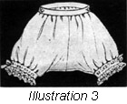
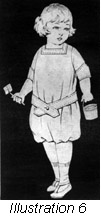

1926—The New-Way Course in Fashionable Clothes-Making
Lesson 26—Children's Clothes
Making Children's Clothes
In the Introductory Lesson of this book you were taught the various principles of children's clothes—the fundamental principles which govern the correct wearing apparel for children. Now you will learn how to make these clothes, how to make pretty dresses and blouses and underthings for the youngsters.
Remember that the materials for children's clothes should be of the type that is wear-resisting and durable, at the same time that it is fine of texture and of good laundering qualities. It is a wise plan to shrink the materials used in the making of children's clothes, and to set the colors. You will remember that shrinking and the setting of colors were taught in Lesson 18. Review that lesson carefully if you are not able to recall instantly the exact method of shrinking and setting the colors of materials.
Boys' wash suits can best resist the ravages of tree-climbing and ball-playing if they are made of heavy poplin. This material launders and wears very nicely, and always looks well. Girls' dresses should also be made of this material, varying with such sensible changes as gingham, prints, dimity and muslin. Rompers, of course, require the most durable material possible as they must endure frequent trips to the laundry.
In making children's clothes, bear in mind that while comfort and wear-resistance are important, style and harmony of line and color also have an importance of their own. A child is never so pretty as when it is well-dressed—and how can a child be well-dressed in a frock that is entirely inharmonious with the very temperament and coloring of that child. The same rules of color that apply to the woman, apply to the child—as do, also, the rules of line-harmony. In making the child's dresses, be sure that you consider such important elements as the type of figure the child has and the color of the hair and eyes.
For instance, don't dress the chubby young girl in a frilly little affair that makes her look twice her size—and then add a huge sash and bow to make her seem even more ludicrous. And don't select a vivid green or orange for the sallow-complexioned young miss who would look best in a pretty shade of pink or old-rose. The child needs taste in clothes as well as the grown-up—and one cannot achieve that good taste without a knowledge of the child's requirements of line and color. When you know exactly what colors are most becoming to the child, and what styles she should wear, then you can proceed to make pretty clothes for her as taught in the ensuing step-by-step directions.
The Middy Blouse (Illustration 26-1)
The middy blouse holds a place of its own in the school and play life of the young girl. It is a garment particularly comfortable and attractive at the same time—a garment no less smart and pretty than it is practical. It is indispensable to the girl's summer wardrobe, and is quite a necessary part of her year-round clothes equipment. The middy is quite simple to make.
Before placing the pattern on the material, preparatory to cutting out the middy, be sure that all wrinkles are pressed out of both material and pattern. Cut carefully, being sure that all construction marks and center lines are marked.
- All seams in the middy blouse should be tailored seams, as taught in Lesson 4.
- Stitch and finish the shoulder seam.
- Baste the sleeve in the armcye before basting or stitching the seams of either waist or sleeve. Make the armcye seams of the tailored type taught in Lesson 4.
- Now stitch the sleeve to the waist and stitch the underarm seam from the bottom of the waist to the lower end of the sleeve. Use the tailored seam.
- Finish the lower end of the sleeve with a cuff made as a sewed-on facing.
- You are now ready to cut the collar and make any needed alterations. If the shoulder of the blouse has been altered the collar will have a corresponding alteration.
- The collar should be double. Place right sides together and stitch carefully, making plain seam, then turn to the right side and baste carefully along the stitched edge so that when finished the collar will have a straight edge turned exactly at the stitching.
- Now place the collar on the waist so that when it is in its proper position the right side of the collar will be up.
- Baste the edge of the neck of the blouse to the edge of the under portion of the collar, matching the construction marks.
- Stitch the collar on the blouse. Make an underturning on the loose edge of the collar and hem it down to cover this line of stitching.
- The middy blouse has now reached the stage when braid or any desired trimming may be applied. Braid is perhaps the most popular and desirable type of trimming used. Remember that the middy is a play garment—not a dress garment, and it should have no elaborate trimming whatever but just a touch of color to relieve the severe dignity of the blouse.
- To finish, you may either sew on buttons and work buttonholes, or you may work eyelets in the material for lacings.
Your middy blouse is now completed. If you have followed these directions carefully you now have a smart, neat, attractive blouse for the young girl. Both you—and she—will find it ideally suited to the requirements of school wear and quite appropriate, too, for after-school-hour play.
Children's Underwear (Illustration 26-2)
Throughout this lesson on the making of children's clothes, you will find that, after all, children's clothes are not so very much different from the clothes we wear and that the routine of construction is very similar.
Patterns for undergarments can be purchased as well as patterns for the outer garments. In using these patterns for the older child, take the child's measurements as directed in Lesson 19, and alter the pattern according to these measurements—exactly as you did when you altered patterns for yourself in Lesson 20. For the very tiny youngster, patterns purchased according to age are as nearly perfect as is possible and will need no alterations.
The chemise for the young girl is made as the chemise in Book III was made, except that the bottom is finished with a faced ruffle instead of being made in the envelope style. Plenty of these practical little garments can be made for the young girl at a trifling expense. Use fine Nainsook, long cloth or crepe.
The method of making the child's underwaist is very simple. Prepare the pattern and material as you would other garments of the same kind. If the pattern is too small or too large, compare its measurements with those of the child's and alter accordingly. Fold your material in the most economical way—so that when the pattern is placed on it and the garment cut the least amount of material is wasted. Make all construction marks and mark all center lines. When you cut the garment, be sure that all seam allowances are made.
- Baste together, matching the construction marks. Use either French seams or tailored seams for shoulder and underarm.
- Now hem or face the closing, using the material for which the pattern calls.
- The lower edge of the waist should be finished at this point with a strip of the material cut straight lengthwise or crosswise. It should be the exact length of the waist measure at the waistline, plus the amount the waist laps at the back. Make a one-fourth inch underturning on all edges. The facing should be wide enough to carry a double row of buttons.
- Baste in place and stitch on all turned edges.
- You may find that a part of the waist extends below. In this case make a very narrow hem on the raw edges.
- Face the neck with a bias facing and the armcye with an exceptional facing. (Lesson 8.) Trim the edge with lace, if desired. Make the buttonholes and sew on the buttons. Your underwaist is now completed.
Drawers and Bloomers (Illustration 26-3)
The child will need plenty of drawers and bloomers—for summer and winter, for play and dress wear. Drawers are usually quite plain with an embroidered or scalloped edge. The routine of making these two practical garments is the same as the routine for making similar garments for grown-ups.
- Cut material, after having pressed both material and pattern free from wrinkles.
- The legs of the drawers are made separately and later joined.
- The first step, after the cutting of the garment, is to French seam the seam on the inside of the leg. This should be done on both legs.
- Now finish the bottom of the leg, either with a plain hem, a ruffle or a band edged with lace or a narrow ruffle. This band is an extension facing, either sewed or set on. Lesson 8.
- Having reached this point, you are now ready to join the two parts together. Use a fell seam, matching the seams carefully and following the construction marks.
- It will be necessary to finish the plackets at the side with binding. However, you have your choice either of a bound placket or a continuous placket.
- The top of the drawers should be put in the belt which is usually in two pieces, there being a placket on either side. These belts are extension or sewed-on facings. (Lesson 8.)
- Don't forget the buttonholes which button on to the underwaist. They should be worked in the ends of the belt as well as the center.
- Sometimes, when making bloomers, a soft elastic is drawn through a narrow facing at the top, instead of having buttonholes to hold the garment in place. When making bloomers follow directions given in Lesson 29, page 59.
Petticoats (Illustration 26-4)
Where is the little girl who doesn't love frilly, dainty petticoats—little lace-trimmed things to show through the "best Sunday frock"? But the young miss must have plenty of serviceable petticoats, too, and these are usually straight lengths of the material, trimmed at the bottom with a ruffle attached in any of the practical ways taught in Lesson 7. Nainsook is an excellent petticoat material; muslin is practical and sateen will be found exceptionally long-wearing.
- Proceed with the cutting of the material.
- The petticoat has a placket in the back, as allowed for in the pattern. It is usually a bound placket.
- If the petticoat is to be attached to the waist, an underwaist is described in this lesson should be made first, the band at the bottom being omitted, and the skirt attached. Often a waist pattern is included with the petticoat pattern. If this is the case, it is best to use it.
- The petticoat may be put into a belt made as a set-on facing. If this belt is used, work buttonholes in the proper place to match the buttons on the underwaist, including one in each end of the belt.
- To attach the waist and petticoat together, stitch the edge of the waist and a bias facing together with one stitching. Turn the bias facing up against the waist. Make a narrow underturning to the wrong side and hem or stitch down.
- The neck and armcye may be faced and trimmed with a neat lace edge.
Night Gown (Illustration 26-5)
For bed-time in winter, the youngster will need cozy little gowns of flannelette in which he or she can snuggle down in absolute comfort.
- When making the nightgown pictured, cut the gown, making all construction marks.
- Join the yoke and body of the gown using any flat seam or a plain seam and facing.
- Join shoulder and under seams matching construction marks. Make tailored seams.
- Make the sleeves and attach to armcye. Bind armcye seam.
- The neck may be faced or the collar made and attached with a bias facing.
- Buttons and button holes finish the front closing.
In summer-time, the youngster will feel crisply cool in a cotton crepe gown, absolutely devoid of all trimming, and with short sleeves and round neck.
Here is one of the many instances where you can save considerably by making your own clothes at home. For the one night gown you can buy ready-made, you should now be able to make three at home—and these three will be better-made, fuller, prettier than those you could buy.
Before leaving this lesson, be sure that you make two or three little night gowns for the young miss in the family. Not only will it give you excellent practice, but it will save you two-thirds of what one gown would cost you ready-made.
Night drawers or pajamas for the little tots are made with feet attached, thus assuring one covering at least for the restless sleeper. These garments should be made of soft warm material, such as flannelette, and they should be large enough so the child can move around without difficulty. The making of these little garments is so much like the making of rompers (Lesson 26) that it is unnecessary to give detailed instructions regarding the actual work.
For boys of six and eight years the drawers are sometimes made and attached to a sleeveless underbody, and over this is worn a jacket made exactly like the pajama jacket for men. No growing child should ever be allowed to wear a sleeping garment that binds in any place.
Rompers (Illustrations 26-6, -7 and -8)
Never was a more practical garment invented for children than the romper. It is merely a waist and drawers combined—but the garment is so comfortable and yet so pretty that one cannot have too many of them. They are ideal for the young girl or boy who persists in crawling around the floor after imaginary fairies and Brownies.
In making rompers, be sure that the garment is long enough in the body. The child will be exceedingly uncomfortable in a romper that is too short from the neck to the crotch. Rather have the little garment too large than too small, and make it with plenty of roominess.
Several materials are very popular for romper-making, among them Gingham, Percale, Devonshire and Poplin. The material should be shrunk and tested for washing qualities before being made up into rompers. As a matter of fact, all materials for children's clothing should be shrunk and color-set before cutting.
- Prepare the pattern and material. Place the pattern on the material and cut.
- Baste the garment for stitching, making a tailored seam on the wrong side.
- At this point it is necessary to try the garment on the child and make any necessary alterations.
- Stitch all seams.
- Finish the opening at the back. The back of the lower part of the rompers should be put in a belt, the ends of which are long enough to encircle the waist and button in front.
- Buttonholes are worked into the belt at the side, in the center back, and in front. The back of the waist should also be sewed into a belt, and on this belt should be buttons which match the buttonholes.
- Cut the collar and cuffs. Before cutting, however, be sure that no alterations are necessary in the pattern. If alterations were made in the shoulder and sleeve, corresponding alterations will have to be made in the collar and cuffs.
- Baste the collar and cuffs in place as indicated by the construction marks, and finish.
- The bottom of the rompers should be finished with a narrow hem through which is drawn elastic. Be very careful that this elastic is not too tight, but it should be tight enough to keep the rompers in place above the knees.
- When the garment is completed, and every buttonhole and button in place, press. Remember that you are studying to be an expert clothes-maker, and the first requirement is care. Never put away a finished garment that is wrinkled and creased.
A practical style for rompers for a child is in two pieces. The upper portion a little kimona waist finished with a hem at the bottom and open at the back. On the hem at the bottom are sewed eight buttons. These buttons are always large. The bloomers are made in two pieces, with a seam from the bottom on one leg straight across to the bottom of the other. The sides have the points often seen in rompers. A placket is finished on each side. The bottoms of the legs are put in bands and the top in a belt made in two sections. The belts exactly fit the bottom of the waist and buttonholes are worked to match the buttons on the waist. For the little child playing around on the floor the bloomers get soiled and may be quickly changed when the garment is made in this way.
There is no end to the pretty things you can make for the children. Little Buster Brown suits for the young boys, pretty Dutch dresses for the tiny girl, dainty underthings and blouses. You will find it fascinating to make little dresses and suits for the youngsters—and while you are studying, you will find it excellent practice.
The next time you are in your favorite dry goods store, glance through the newest pattern styles for children. Select one or two styles that are simple enough to be made easily, yet with enough of the new things you have learned incorporated into their making to afford you good practice. Then buy inexpensive material with which to make the garments—and see how much you have learned from this lesson. You will probably be surprised yourself when you see how perfectly delightful it is to take a piece of lifeless material and simply by following the steps given here, transform that material into something pretty for the child to wear! See how many original styles you can create for the child, too. This will develop your tastes and prepare you for the interesting lessons on design to come later.